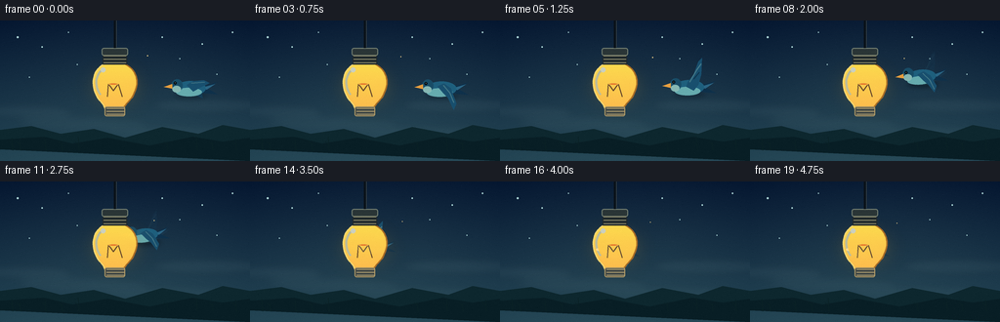
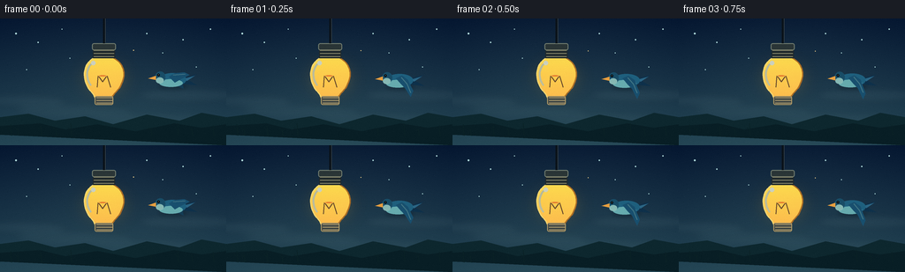

CODING AGENTS AS PIXEL WORLD MODELS
traex/GPT-5.6-Sol · dynamic_spatial_relationship_0043
点击播放 · 原生 RGB 像素
逐轮保存的候选
回放视频、检查图与代码变化。
每份候选均可单独播放。实际图片检查记录在下方工具轨迹中。
候选 01播放与检查图
点击播放 · 原生 RGB 像素


展开代码变化
--- 上一保存版本
+++ 本次保存版本
@@ -0,0 +1,240 @@
+from pathlib import Path
+import math
+import numpy as np
+from PIL import Image, ImageDraw, ImageFilter
+import artifact_io
+
+W, H, N = 256, 144, 20
+SS = 4
+RS = np.random.RandomState(43)
+
+
+def sc(v):
+ if isinstance(v, (tuple, list)):
+ return tuple(int(round(x * SS)) for x in v)
+ return int(round(v * SS))
+
+
+def smoothstep(x):
+ x = max(0.0, min(1.0, x))
+ return x*x*(3-2*x)
+
+
+def bezier(points, steps=48):
+ # Cubic Bezier point list
+ p0,p1,p2,p3 = points
+ out=[]
+ for i in range(steps+1):
+ t=i/steps; u=1-t
+ x=u**3*p0[0]+3*u*u*t*p1[0]+3*u*t*t*p2[0]+t**3*p3[0]
+ y=u**3*p0[1]+3*u*u*t*p1[1]+3*u*t*t*p2[1]+t**3*p3[1]
+ out.append((int(x*SS),int(y*SS)))
+ return out
+
+
+def alpha_ellipse(layer, box, fill, blur=0):
+ tmp=Image.new('RGBA',layer.size,(0,0,0,0)); d=ImageDraw.Draw(tmp)
+ d.ellipse(sc(box),fill=fill)
+ if blur: tmp=tmp.filter(ImageFilter.GaussianBlur(sc(blur)))
+ layer.alpha_composite(tmp)
+
+
+def transform(points, cx, cy, scale=1, angle=0):
+ ca,sa=math.cos(angle),math.sin(angle)
+ return [((cx+(x*ca-y*sa)*scale)*SS,(cy+(x*sa+y*ca)*scale)*SS) for x,y in points]
+
+
+def draw_background(frame_i):
+ # Deep cyan-blue twilight gradient, with a warm pool around the bulb.
+ yy=np.linspace(0,1,H*SS)[:,None,None]
+ top=np.array([12,31,55.],float); bot=np.array([43,78,91.],float)
+ arr=np.tile(top*(1-yy)+bot*yy,(1,W*SS,1))
+ # Subtle vignette and atmospheric horizontal variation.
+ ygrid,xgrid=np.mgrid[0:H*SS,0:W*SS]
+ vign=np.sqrt(((xgrid-W*SS*.5)/(W*SS*.7))**2+((ygrid-H*SS*.47)/(H*SS*.9))**2)
+ arr-=np.clip(vign-.28,0,.8)[...,None]*np.array([12,14,11])
+ arr=np.uint8(np.clip(arr,0,255))
+ im=Image.fromarray(arr,'RGB').convert('RGBA')
+ d=ImageDraw.Draw(im,'RGBA')
+ # Stars/dust: fixed and quiet so the action reads cleanly.
+ stars=[(18,17,1),(43,27,.7),(70,12,.6),(166,17,.8),(207,24,.65),(238,12,.8),
+ (30,58,.45),(222,55,.5),(184,39,.45),(79,45,.4)]
+ for x,y,r in stars:
+ glow=int(95+35*math.sin(frame_i*.23+x))
+ d.ellipse(sc((x-r,y-r,x+r,y+r)), fill=(176,218,219,glow))
+ # Layered mist / clouds.
+ cloud=Image.new('RGBA',im.size,(0,0,0,0)); cd=ImageDraw.Draw(cloud,'RGBA')
+ for cx,cy,rx,ry,a in [(26,93,48,7,13),(84,106,66,9,10),(213,87,58,8,14),(183,115,74,8,9)]:
+ cd.ellipse(sc((cx-rx,cy-ry,cx+rx,cy+ry)),fill=(181,214,211,a))
+ cloud=cloud.filter(ImageFilter.GaussianBlur(sc(4)))
+ im.alpha_composite(cloud)
+ d=ImageDraw.Draw(im,'RGBA')
+ # Distant low hill silhouettes and reeds establish depth.
+ d.polygon([sc((0,125)),sc((0,112)),sc((32,108)),sc((62,116)),sc((96,111)),sc((128,120)),sc((166,109)),sc((203,116)),sc((228,107)),sc((256,112)),sc((256,144))], fill=(13,39,46,160))
+ d.polygon([sc((0,132)),sc((0,122)),sc((45,119)),sc((74,126)),sc((110,120)),sc((153,128)),sc((197,119)),sc((228,124)),sc((256,120)),sc((256,144))], fill=(8,30,37,210))
+ for x,h in [(13,13),(21,8),(47,11),(64,7),(81,14),(172,9),(202,14),(218,8),(242,12)]:
+ d.line([sc((x,133)),sc((x-1,133-h))], fill=(10,33,37,175),width=sc(.7))
+ d.line([sc((x-1,127)),sc((x-4,124))], fill=(10,33,37,140),width=sc(.6))
+ return im
+
+
+def draw_bird(base, cx, cy, flap, scale=.95, angle=0.0, opacity=255):
+ """Paint a compact blue swallow, pointing left; silhouette remains legible at 256px."""
+ layer=Image.new('RGBA',base.size,(0,0,0,0))
+ d=ImageDraw.Draw(layer,'RGBA')
+ def P(pts): return [(int(x),int(y)) for x,y in transform(pts,cx,cy,scale,angle)]
+ def E(box, fill):
+ # ellipses rendered in a local layer so body can tilt.
+ x0,y0,x1,y1=box; pad=3
+ tile=Image.new('RGBA',(int((x1-x0+2*pad)*SS),int((y1-y0+2*pad)*SS)),(0,0,0,0))
+ td=ImageDraw.Draw(tile); td.ellipse((pad*SS,pad*SS,(x1-x0+pad)*SS,(y1-y0+pad)*SS),fill=fill)
+ tile=tile.resize((max(1,int(tile.width*scale)),max(1,int(tile.height*scale))),Image.Resampling.LANCZOS)
+ tile=tile.rotate(-math.degrees(angle),resample=Image.Resampling.BICUBIC,expand=True)
+ pos=(int((cx+(x0+x1)/2*scale)*SS-tile.width/2),int((cy+(y0+y1)/2*scale)*SS-tile.height/2))
+ layer.alpha_composite(tile,pos)
+ # Soft moving shadow gives depth without motion blur obscuring the subject.
+ shadow=Image.new('RGBA',base.size,(0,0,0,0)); sd=ImageDraw.Draw(shadow)
+ sd.ellipse(sc((cx-15*scale,cy+6*scale,cx+18*scale,cy+12*scale)),fill=(3,15,22,70))
+ shadow=shadow.filter(ImageFilter.GaussianBlur(sc(2.3)))
+ layer.alpha_composite(shadow)
+ # Tail first: forked blue-black feathers.
+ d.polygon(P([(12,0),(29,-5),(19,2),(30,8),(9,6)]),fill=(14,48,74,opacity))
+ d.polygon(P([(13,1),(27,-3),(18,3)]),fill=(43,101,132,opacity))
+ # Far wing. flap -1 means raised, +1 means lowered.
+ wy=flap
+ far=[(-2,1),(3,-4),(8,-8-12*wy),(14,-12-10*wy),(12,-2),(8,7),(1,7)] if wy<0 else [(-2,0),(4,-3),(13,5+10*wy),(14,12+9*wy),(7,9),(1,6)]
+ d.polygon(P(far),fill=(18,61,88,int(opacity*.84)))
+ # Body and breast.
+ E((-14,-6,17,9),(30,95,125,opacity))
+ E((-14,1,13,10),(102,171,174,opacity))
+ # Main wing, strongly changing shape each beat.
+ if flap < -0.12:
+ wing=[(-2,1),(0,-4),(6,-12),(11,-22-4*abs(flap)),(15,-25-5*abs(flap)),(14,-12),(11,-1),(6,5)]
+ elif flap > .12:
+ wing=[(-3,-1),(4,-4),(11,1),(17,11+6*flap),(14,18+6*flap),(8,11),(3,6)]
+ else:
+ wing=[(-3,-2),(4,-6),(15,-7),(21,-4),(11,1),(4,5)]
+ d.polygon(P(wing),fill=(24,79,110,opacity))
+ # Wing highlight and feather streaks.
+ hi=wing[:]
+ if flap < -.12:
+ d.line(P([(2,-4),(9,-16),(14,-23)]),fill=(89,151,163,int(opacity*.75)),width=max(1,sc(1.1*scale)))
+ d.line(P([(6,-7),(12,-14)]),fill=(9,49,77,int(opacity*.65)),width=max(1,sc(.7*scale)))
+ elif flap>.12:
+ d.line(P([(3,-2),(10,6),(14,16)]),fill=(81,143,156,int(opacity*.72)),width=max(1,sc(1.0*scale)))
+ else:
+ d.line(P([(2,-4),(16,-5)]),fill=(84,147,160,int(opacity*.7)),width=max(1,sc(1.0*scale)))
+ # Head, cheek, beak.
+ E((-19,-8,-7,5),(24,76,102,opacity))
+ E((-18,-1,-9,6),(134,184,179,opacity))
+ d.polygon(P([(-18,-3),(-27,0),(-18,2)]),fill=(232,159,63,opacity))
+ # Eye with catchlight.
+ ex,ey=transform([(-15,-4)],cx,cy,scale,angle)[0]
+ rr=max(2,int(1.65*scale*SS)); d.ellipse((int(ex-rr),int(ey-rr),int(ex+rr),int(ey+rr)),fill=(4,13,18,opacity))
+ rr2=max(1,int(.48*scale*SS)); d.ellipse((int(ex-rr2),int(ey-rr2*1.5),int(ex+rr2),int(ey+rr2*.5)),fill=(238,250,240,opacity))
+ # Composite opacity is already baked into shapes.
+ base.alpha_composite(layer)
+
+
+def bulb_mask_shape(draw, fill):
+ pts=bezier([(111,43),(95,47),(90,66),(102,82)],18)
+ pts+=bezier([(102,82),(107,87),(108,91),(108,94)],10)[1:]
+ pts += [(126*SS,94*SS)]
+ right=bezier([(126,94),(126,88),(130,85),(135,79)],10)
+ right+=bezier([(135,79),(147,61),(137,47),(124,43)],18)[1:]
+ pts += right
+ pts += [(111*SS,43*SS)]
+ draw.polygon(pts,fill=fill)
+
+
+def draw_bulb(base, frame_i):
+ # Broad glow is behind the physical lamp. Flicker is restrained and natural.
+ pulse=1.0+0.018*math.sin(frame_i*.72)
+ glow=Image.new('RGBA',base.size,(0,0,0,0))
+ for rad,a in [(35,14),(25,20),(17,33)]:
+ alpha_ellipse(glow,(118-rad,68-rad*.82,118+rad,68+rad*.82),(255,190,67,int(a*pulse)),blur=rad*.23)
+ base.alpha_composite(glow)
+ # Opaque-enough warm glass foreground is the key depth cue: it covers the bird.
+ glass=Image.new('RGBA',base.size,(0,0,0,0)); gd=ImageDraw.Draw(glass,'RGBA')
+ bulb_mask_shape(gd,(244,182,61,218))
+ # Internal bottom-up amber gradient clipped by the silhouette.
+ mask=Image.new('L',base.size,0); md=ImageDraw.Draw(mask); bulb_mask_shape(md,235)
+ arr=np.zeros((H*SS,W*SS,4),dtype=np.uint8)
+ y=np.arange(H*SS)[:,None]
+ arr[...,0]=255; arr[...,1]=np.clip(223-(y-43*SS)*.18,145,225).astype(np.uint8); arr[...,2]=78
+ arr[...,3]=np.array(mask)
+ tint=Image.fromarray(arr,'RGBA')
+ glass.alpha_composite(tint)
+ gd=ImageDraw.Draw(glass,'RGBA')
+ # Outer contour and glossy reflection.
+ outline=bezier([(111,43),(95,47),(90,66),(102,82)],22)+bezier([(102,82),(107,87),(108,91),(108,94)],10)[1:]
+ gd.line(outline,fill=(255,221,116,245),width=sc(1.3))
+ right=bezier([(126,94),(126,88),(130,85),(135,79)],10)+bezier([(135,79),(147,61),(137,47),(124,43)],22)[1:]
+ gd.line(right,fill=(185,114,34,230),width=sc(1.4))
+ gd.line(bezier([(104,51),(97,57),(97,69),(103,76)],18),fill=(255,250,201,170),width=sc(2.2))
+ gd.ellipse(sc((103,48,108,53)),fill=(255,255,227,195))
+ # Filament and support wires visible in front of the amber body.
+ gd.line([sc((110,78)),sc((111,65)),sc((116,72)),sc((121,65)),sc((125,78))],fill=(103,64,34,200),width=sc(1.05))
+ gd.line([sc((111,65)),sc((121,65))],fill=(245,113,38,235),width=sc(1.3))
+ gd.ellipse(sc((111,63.8,121,66.2)),outline=(255,204,78,235),width=sc(.8))
+ base.alpha_composite(glass)
+ # Neck, socket, hanging cable all sit at the foremost plane.
+ d=ImageDraw.Draw(base,'RGBA')
+ d.rounded_rectangle(sc((107,88,128,98)),radius=sc(2),fill=(65,71,69,255),outline=(176,154,102,255),width=sc(1))
+ for y0 in [90,93,96]:
+ d.line([sc((109,y0)),sc((127,y0))],fill=(198,177,123,230),width=sc(.8))
+ d.rectangle(sc((105,31,130,45)),fill=(31,40,43,255))
+ d.rounded_rectangle(sc((104,28,131,36)),radius=sc(2.2),fill=(42,53,54,255),outline=(113,124,111,255),width=sc(1))
+ for y0 in [36,39.5,43]:
+ d.line([sc((106,y0)),sc((129,y0))],fill=(133,133,105,235),width=sc(1))
+ d.line([sc((117.5,-2)),sc((117.5,28))],fill=(10,18,25,255),width=sc(2.2))
+ d.line([sc((119,-2)),sc((119,27))],fill=(70,77,75,110),width=sc(.55))
+
+
+def make_frame(i):
+ im=draw_background(i)
+ # Initial hold (bird clearly right of bulb), then eased flight into exact overlap.
+ if i <= 4:
+ p=0.0
+ cx=194 + 1.2*math.sin(i*.8)
+ cy=68 + 1.0*math.sin(i*.9)
+ travel=False
+ else:
+ p=smoothstep((i-4)/12.0)
+ cx=194*(1-p)+118*p
+ # Slight rise, then dip toward bulb center.
+ cy=68 - 17*math.sin(math.pi*p) + 2*p
+ travel=True
+ # Rhythmic wing beat; initial readable poses vary only gently.
+ phase=(i*.82 if travel else i*.48)
+ flap=math.sin(phase)
+ angle=(-0.10*math.sin(math.pi*p) if travel else 0.0)
+ scale=.98-.14*p
+ # Two extremely subtle translucent wing echoes only during fastest travel.
+ if travel and .23<p<.75:
+ vx=(194-118)/12.0
+ draw_bird(im,cx+vx*.45,cy+1.0,-flap,scale*.98,angle,opacity=30)
+ draw_bird(im,cx,cy,flap,scale,angle,opacity=255)
+ # Bulb always foreground; only becomes spatially consequential upon overlap.
+ draw_bulb(im,i)
+ # A faint foreground dust mote adds life and stays deterministic.
+ dd=ImageDraw.Draw(im,'RGBA')
+ mote_x=151+7*math.sin(i*.17); mote_y=36+i*.35
+ dd.ellipse(sc((mote_x-.45,mote_y-.45,mote_x+.45,mote_y+.45)),fill=(255,218,142,105))
+ out=im.convert('RGB').resize((W,H),Image.Resampling.LANCZOS)
+ # Film grain, restrained and stable in amplitude.
+ a=np.asarray(out).astype(np.int16)
+ rng=np.random.RandomState(900+i)
+ grain=rng.normal(0,0.85,a.shape[:2]).astype(np.int16)[...,None]
+ a=np.clip(a+grain,0,255).astype(np.uint8)
+ return a
+
+
+def main():
+ frames=np.stack([make_frame(i) for i in range(N)]).astype(np.uint8)
+ assert frames.shape==(20,144,256,3) and frames.dtype==np.uint8
+ artifact_io.save(frames,Path(__file__).resolve().parent)
+ print('saved',frames.shape,frames.dtype)
+
+if __name__=='__main__':
+ main()
可观测工具轨迹
实际执行的命令与返回图片。
命令 1exit 0
/bin/bash -lc "cat prompt.txt && printf '\\n---RULES---\\n' && cat GENERATION_RULES.md && printf '\\n---SPEC---\\n' && cat task_spec.json"
命令 2exit 1
/bin/bash -lc "find . -maxdepth 2 -type f -printf '%P\\n' | sort && printf '\\n-- tools --\\n' && command -v ffmpeg && command -v python3 && python3 - <<'PY'
try:
import PIL; print('PIL',PIL.__version__)
except Exception as e: print('no PIL',e)
try:
import cv2; print('cv2',cv2.__version__)
except Exception as e: print('no cv2',e)
PY"命令 3exit 0
/bin/bash -lc "sed -n '1,260p' artifact_io.py"
命令 4exit 0
/bin/bash -lc "python3 - <<'PY'
import numpy as np
print('numpy',np.__version__)
for n in ['PIL','cv2','imageio']:
try:
m=__import__(n);print(n,getattr(m,'__version__','ok'))
except Exception as e: print(n,'ERR',e)
PY
command -v ffmpeg || true"命令 5exit 0
/bin/bash -lc "cat > generate.py <<'PY'
from pathlib import Path
import math
import numpy as np
from PIL import Image, ImageDraw, ImageFilter
import artifact_io
W, H, N = 256, 144, 20
SS = 4
RS = np.random.RandomState(43)
def sc(v):
if isinstance(v, (tuple, list)):
return tuple(int(round(x * SS)) for x in v)
return int(round(v * SS))
def smoothstep(x):
x = max(0.0, min(1.0, x))
return x*x*(3-2*x)
def bezier(points, steps=48):
# Cubic Bezier point list
p0,p1,p2,p3 = points
out=[]
for i in range(steps+1):
t=i/steps; u=1-t
x=u**3*p0[0]+3*u*u*t*p1[0]+3*u*t*t*p2[0]+t**3*p3[0]
y=u**3*p0[1]+3*u*u*t*p1[1]+3*u*t*t*p2[1]+t**3*p3[1]
out.append((int(x*SS),int(y*SS)))
return out
def alpha_ellipse(layer, box, fill, blur=0):
tmp=Image.new('RGBA',layer.size,(0,0,0,0)); d=ImageDraw.Draw(tmp)
d.ellipse(sc(box),fill=fill)
if blur: tmp=tmp.filter(ImageFilter.GaussianBlur(sc(blur)))
layer.alpha_composite(tmp)
def transform(points, cx, cy, scale=1, angle=0):
ca,sa=math.cos(angle),math.sin(angle)
return [((cx+(x*ca-y*sa)*scale)*SS,(cy+(x*sa+y*ca)*scale)*SS) for x,y in points]
def draw_background(frame_i):
# Deep cyan-blue twilight gradient, with a warm pool around the bulb.
yy=np.linspace(0,1,H*SS)[:,None,None]
top=np.array([12,31,55.],float); bot=np.array([43,78,91.],float)
arr=np.tile(top*(1-yy)+bot*yy,(1,W*SS,1))
# Subtle vignette and atmospheric horizontal variation.
ygrid,xgrid=np.mgrid[0:H*SS,0:W*SS]
vign=np.sqrt(((xgrid-W*SS*.5)/(W*SS*.7))**2+((ygrid-H*SS*.47)/(H*SS*.9))**2)
arr-=np.clip(vign-.28,0,.8)[...,None]*np.array([12,14,11])
arr=np.uint8(np.clip(arr,0,255))
im=Image.fromarray(arr,'RGB').convert('RGBA')
d=ImageDraw.Draw(im,'RGBA')
# Stars/dust: fixed and quiet so the action reads cleanly.
stars=[(18,17,1),(43,27,.7),(70,12,.6),(166,17,.8),(207,24,.65),(238,12,.8),
(30,58,.45),(222,55,.5),(184,39,.45),(79,45,.4)]
for x,y,r in stars:
glow=int(95+35*math.sin(frame_i*.23+x))
d.ellipse(sc((x-r,y-r,x+r,y+r)), fill=(176,218,219,glow))
# Layered mist / clouds.
cloud=Image.new('RGBA',im.size,(0,0,0,0)); cd=ImageDraw.Draw(cloud,'RGBA')
for cx,cy,rx,ry,a in [(26,93,48,7,13),(84,106,66,9,10),(213,87,58,8,14),(183,115,74,8,9)]:
cd.ellipse(sc((cx-rx,cy-ry,cx+rx,cy+ry)),fill=(181,214,211,a))
cloud=cloud.filter(ImageFilter.GaussianBlur(sc(4)))
im.alpha_composite(cloud)
d=ImageDraw.Draw(im,'RGBA')
# Distant low hill silhouettes and reeds establish depth.
d.polygon([sc((0,125)),sc((0,112)),sc((32,108)),sc((62,116)),sc((96,111)),sc((128,120)),sc((166,109)),sc((203,116)),sc((228,107)),sc((256,112)),sc((256,144))], fill=(13,39,46,160))
d.polygon([sc((0,132)),sc((0,122)),sc((45,119)),sc((74,126)),sc((110,120)),sc((153,128)),sc((197,119)),sc((228,124)),sc((256,120)),sc((256,144))], fill=(8,30,37,210))
for x,h in [(13,13),(21,8),(47,11),(64,7),(81,14),(172,9),(202,14),(218,8),(242,12)]:
d.line([sc((x,133)),sc((x-1,133-h))], fill=(10,33,37,175),width=sc(.7))
d.line([sc((x-1,127)),sc((x-4,124))], fill=(10,33,37,140),width=sc(.6))
return im
def draw_bird(base, cx, cy, flap, scale=.95, angle=0.0, opacity=255):
\"\"\"Paint a compact blue swallow, pointing left; silhouette remains legible at 256px.\"\"\"
layer=Image.new('RGBA',base.size,(0,0,0,0))
d=ImageDraw.Draw(layer,'RGBA')
def P(pts): return [(int(x),int(y)) for x,y in transform(pts,cx,cy,scale,angle)]
def E(box, fill):
# ellipses rendered in a local layer so body can tilt.
x0,y0,x1,y1=box; pad=3
tile=Image.new('RGBA',(int((x1-x0+2*pad)*SS),int((y1-y0+2*pad)*SS)),(0,0,0,0))
td=ImageDraw.Draw(tile); td.ellipse((pad*SS,pad*SS,(x1-x0+pad)*SS,(y1-y0+pad)*SS),fill=fill)
tile=tile.resize((max(1,int(tile.width*scale)),max(1,int(tile.height*scale))),Image.Resampling.LANCZOS)
tile=tile.rotate(-math.degrees(angle),resample=Image.Resampling.BICUBIC,expand=True)
pos=(int((cx+(x0+x1)/2*scale)*SS-tile.width/2),int((cy+(y0+y1)/2*scale)*SS-tile.height/2))
layer.alpha_composite(tile,pos)
# Soft moving shadow gives depth without motion blur obscuring the subject.
shadow=Image.new('RGBA',base.size,(0,0,0,0)); sd=ImageDraw.Draw(shadow)
sd.ellipse(sc((cx-15*scale,cy+6*scale,cx+18*scale,cy+12*scale)),fill=(3,15,22,70))
shadow=shadow.filter(ImageFilter.GaussianBlur(sc(2.3)))
layer.alpha_composite(shadow)
# Tail first: forked blue-black feathers.
d.polygon(P([(12,0),(29,-5),(19,2),(30,8),(9,6)]),fill=(14,48,74,opacity))
d.polygon(P([(13,1),(27,-3),(18,3)]),fill=(43,101,132,opacity))
# Far wing. flap -1 means raised, +1 means lowered.
wy=flap
far=[(-2,1),(3,-4),(8,-8-12*wy),(14,-12-10*wy),(12,-2),(8,7),(1,7)] if wy<0 else [(-2,0),(4,-3),(13,5+10*wy),(14,12+9*wy),(7,9),(1,6)]
d.polygon(P(far),fill=(18,61,88,int(opacity*.84)))
# Body and breast.
E((-14,-6,17,9),(30,95,125,opacity))
E((-14,1,13,10),(102,171,174,opacity))
# Main wing, strongly changing shape each beat.
if flap < -0.12:
wing=[(-2,1),(0,-4),(6,-12),(11,-22-4*abs(flap)),(15,-25-5*abs(flap)),(14,-12),(11,-1),(6,5)]
elif flap > .12:
wing=[(-3,-1),(4,-4),(11,1),(17,11+6*flap),(14,18+6*flap),(8,11),(3,6)]
else:
wing=[(-3,-2),(4,-6),(15,-7),(21,-4),(11,1),(4,5)]
d.polygon(P(wing),fill=(24,79,110,opacity))
# Wing highlight and feather streaks.
hi=wing[:]
if flap < -.12:
d.line(P([(2,-4),(9,-16),(14,-23)]),fill=(89,151,163,int(opacity*.75)),width=max(1,sc(1.1*scale)))
d.line(P([(6,-7),(12,-14)]),fill=(9,49,77,int(opacity*.65)),width=max(1,sc(.7*scale)))
elif flap>.12:
d.line(P([(3,-2),(10,6),(14,16)]),fill=(81,143,156,int(opacity*.72)),width=max(1,sc(1.0*scale)))
else:
d.line(P([(2,-4),(16,-5)]),fill=(84,147,160,int(opacity*.7)),width=max(1,sc(1.0*scale)))
# Head, cheek, beak.
E((-19,-8,-7,5),(24,76,102,opacity))
E((-18,-1,-9,6),(134,184,179,opacity))
d.polygon(P([(-18,-3),(-27,0),(-18,2)]),fill=(232,159,63,opacity))
# Eye with catchlight.
ex,ey=transform([(-15,-4)],cx,cy,scale,angle)[0]
rr=max(2,int(1.65*scale*SS)); d.ellipse((int(ex-rr),int(ey-rr),int(ex+rr),int(ey+rr)),fill=(4,13,18,opacity))
rr2=max(1,int(.48*scale*SS)); d.ellipse((int(ex-rr2),int(ey-rr2*1.5),int(ex+rr2),int(ey+rr2*.5)),fill=(238,250,240,opacity))
# Composite opacity is already baked into shapes.
base.alpha_composite(layer)
def bulb_mask_shape(draw, fill):
pts=bezier([(111,43),(95,47),(90,66),(102,82)],18)
pts+=bezier([(102,82),(107,87),(108,91),(108,94)],10)[1:]
pts += [(126*SS,94*SS)]
right=bezier([(126,94),(126,88),(130,85),(135,79)],10)
right+=bezier([(135,79),(147,61),(137,47),(124,43)],18)[1:]
pts += right
pts += [(111*SS,43*SS)]
draw.polygon(pts,fill=fill)
def draw_bulb(base, frame_i):
# Broad glow is behind the physical lamp. Flicker is restrained and natural.
pulse=1.0+0.018*math.sin(frame_i*.72)
glow=Image.new('RGBA',base.size,(0,0,0,0))
for rad,a in [(35,14),(25,20),(17,33)]:
alpha_ellipse(glow,(118-rad,68-rad*.82,118+rad,68+rad*.82),(255,190,67,int(a*pulse)),blur=rad*.23)
base.alpha_composite(glow)
# Opaque-enough warm glass foreground is the key depth cue: it covers the bird.
glass=Image.new('RGBA',base.size,(0,0,0,0)); gd=ImageDraw.Draw(glass,'RGBA')
bulb_mask_shape(gd,(244,182,61,218))
# Internal bottom-up amber gradient clipped by the silhouette.
mask=Image.new('L',base.size,0); md=ImageDraw.Draw(mask); bulb_mask_shape(md,235)
arr=np.zeros((H*SS,W*SS,4),dtype=np.uint8)
y=np.arange(H*SS)[:,None]
arr[...,0]=255; arr[...,1]=np.clip(223-(y-43*SS)*.18,145,225).astype(np.uint8); arr[...,2]=78
arr[...,3]=np.array(mask)
tint=Image.fromarray(arr,'RGBA')
glass.alpha_composite(tint)
gd=ImageDraw.Draw(glass,'RGBA')
# Outer contour and glossy reflection.
outline=bezier([(111,43),(95,47),(90,66),(102,82)],22)+bezier([(102,82),(107,87),(108,91),(108,94)],10)[1:]
gd.line(outline,fill=(255,221,116,245),width=sc(1.3))
right=bezier([(126,94),(126,88),(130,85),(135,79)],10)+bezier([(135,79),(147,61),(137,47),(124,43)],22)[1:]
gd.line(right,fill=(185,114,34,230),width=sc(1.4))
gd.line(bezier([(104,51),(97,57),(97,69),(103,76)],18),fill=(255,250,201,170),width=sc(2.2))
gd.ellipse(sc((103,48,108,53)),fill=(255,255,227,195))
# Filament and support wires visible in front of the amber body.
gd.line([sc((110,78)),sc((111,65)),sc((116,72)),sc((121,65)),sc((125,78))],fill=(103,64,34,200),width=sc(1.05))
gd.line([sc((111,65)),sc((121,65))],fill=(245,113,38,235),width=sc(1.3))
gd.ellipse(sc((111,63.8,121,66.2)),outline=(255,204,78,235),width=sc(.8))
base.alpha_composite(glass)
# Neck, socket, hanging cable all sit at the foremost plane.
d=ImageDraw.Draw(base,'RGBA')
d.rounded_rectangle(sc((107,88,128,98)),radius=sc(2),fill=(65,71,69,255),outline=(176,154,102,255),width=sc(1))
for y0 in [90,93,96]:
d.line([sc((109,y0)),sc((127,y0))],fill=(198,177,123,230),width=sc(.8))
d.rectangle(sc((105,31,130,45)),fill=(31,40,43,255))
d.rounded_rectangle(sc((104,28,131,36)),radius=sc(2.2),fill=(42,53,54,255),outline=(113,124,111,255),width=sc(1))
for y0 in [36,39.5,43]:
d.line([sc((106,y0)),sc((129,y0))],fill=(133,133,105,235),width=sc(1))
d.line([sc((117.5,-2)),sc((117.5,28))],fill=(10,18,25,255),width=sc(2.2))
d.line([sc((119,-2)),sc((119,27))],fill=(70,77,75,110),width=sc(.55))
def make_frame(i):
im=draw_background(i)
# Initial hold (bird clearly right of bulb), then eased flight into exact overlap.
if i <= 4:
p=0.0
cx=194 + 1.2*math.sin(i*.8)
cy=68 + 1.0*math.sin(i*.9)
travel=False
else:
p=smoothstep((i-4)/12.0)
cx=194*(1-p)+118*p
# Slight rise, then dip toward bulb center.
cy=68 - 17*math.sin(math.pi*p) + 2*p
travel=True
# Rhythmic wing beat; initial readable poses vary only gently.
phase=(i*.82 if travel else i*.48)
flap=math.sin(phase)
angle=(-0.10*math.sin(math.pi*p) if travel else 0.0)
scale=.98-.14*p
# Two extremely subtle translucent wing echoes only during fastest travel.
if travel and .23<p<.75:
vx=(194-118)/12.0
draw_bird(im,cx+vx*.45,cy+1.0,-flap,scale*.98,angle,opacity=30)
draw_bird(im,cx,cy,flap,scale,angle,opacity=255)
# Bulb always foreground; only becomes spatially consequential upon overlap.
draw_bulb(im,i)
# A faint foreground dust mote adds life and stays deterministic.
dd=ImageDraw.Draw(im,'RGBA')
mote_x=151+7*math.sin(i*.17); mote_y=36+i*.35
dd.ellipse(sc((mote_x-.45,mote_y-.45,mote_x+.45,mote_y+.45)),fill=(255,218,142,105))
out=im.convert('RGB').resize((W,H),Image.Resampling.LANCZOS)
# Film grain, restrained and stable in amplitude.
a=np.asarray(out).astype(np.int16)
rng=np.random.RandomState(900+i)
grain=rng.normal(0,0.85,a.shape[:2]).astype(np.int16)[...,None]
a=np.clip(a+grain,0,255).astype(np.uint8)
return a
def main():
frames=np.stack([make_frame(i) for i in range(N)]).astype(np.uint8)
assert frames.shape==(20,144,256,3) and frames.dtype==np.uint8
artifact_io.save(frames,Path(__file__).resolve().parent)
print('saved',frames.shape,frames.dtype)
if __name__=='__main__':
main()
PY
python3 generate.py
ls -lh pixels.npz inspection.png index.html frames/00.png frames/19.png"命令 6exit 0
/bin/bash -lc "python3 - <<'PY'
from pathlib import Path
import numpy as np
from PIL import Image
z=np.load('pixels.npz')['pixels']
assert z.shape==(144,256,20) and z.dtype==np.uint32
frames=np.stack([np.array(Image.open(f'frames/{i:02d}.png')) for i in range(20)])
assert frames.shape==(20,144,256,3) and frames.dtype==np.uint8
# Verify packed artifact round trip.
p=(frames[...,0].astype(np.uint32)<<16)|(frames[...,1].astype(np.uint32)<<8)|frames[...,2]
assert np.array_equal(z,p.transpose(1,2,0))
changes=np.mean(np.abs(np.diff(frames.astype(np.int16),axis=0)),axis=(1,2,3))
print('round-trip OK')
print('frame RGB ranges:',frames.min(),frames.max())
print('mean adjacent changes:',np.round(changes,2).tolist())
print('all adjacent frames distinct:',bool(np.all(changes>0)))
print('deliverables:', ', '.join(x.name for x in Path('.').iterdir() if x.name in ['pixels.npz','index.html','inspection.png','transition_check.png','generate.py']))
PY"保存候选 1 份；完成命令 6 次；可验证图片返回 0 张。原始 API 响应与完整日志保留在本地。